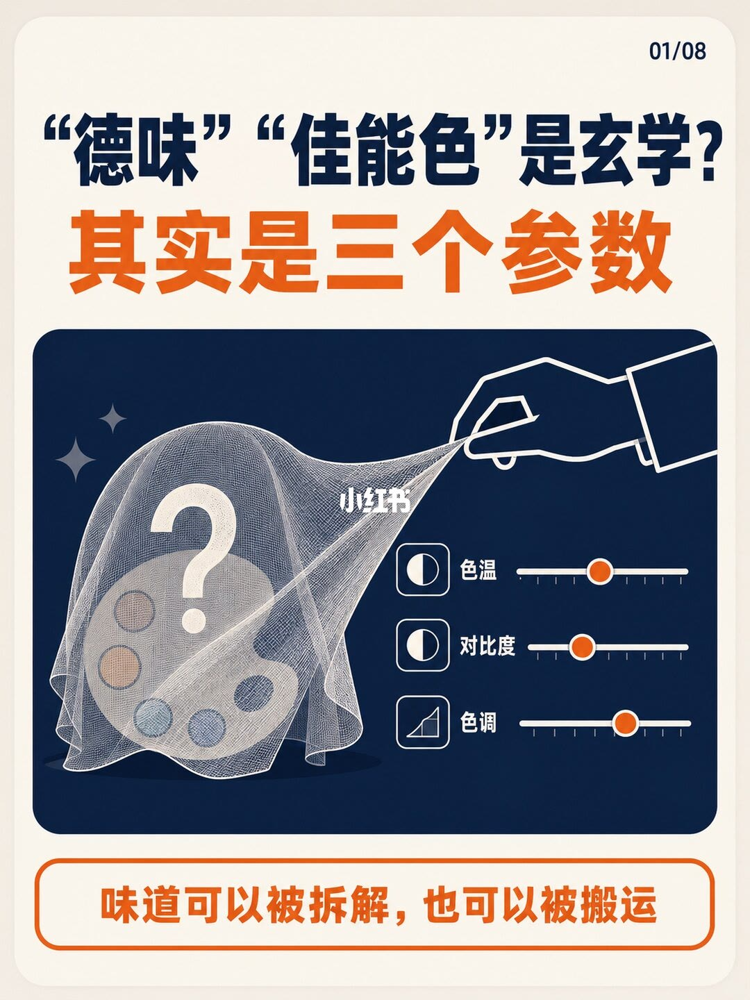
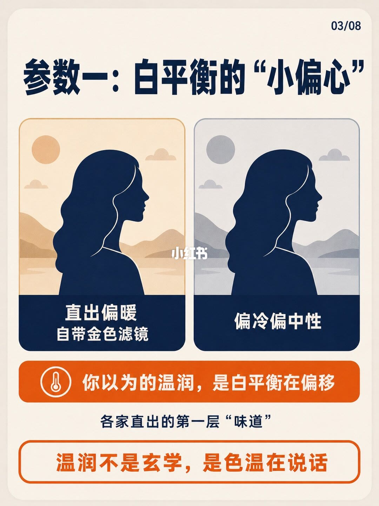
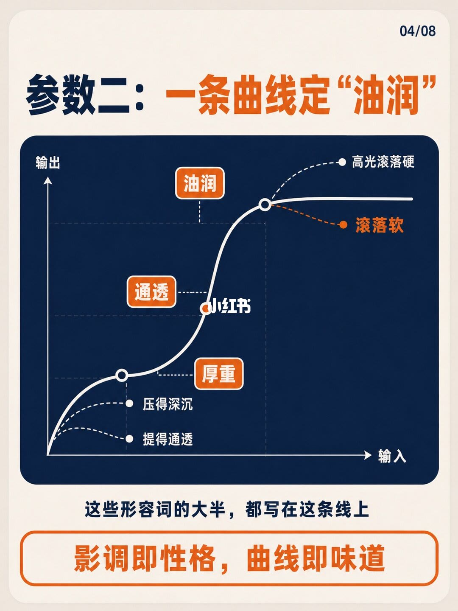
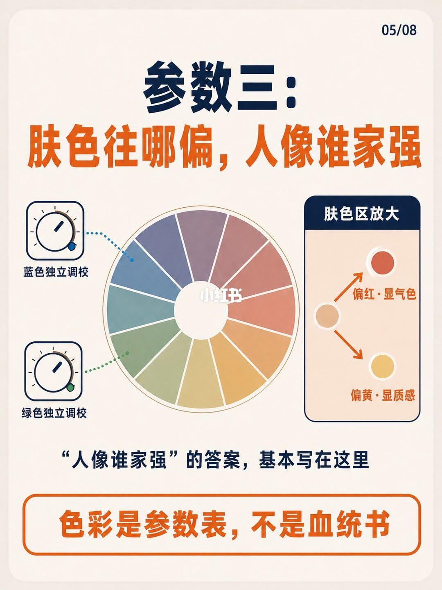
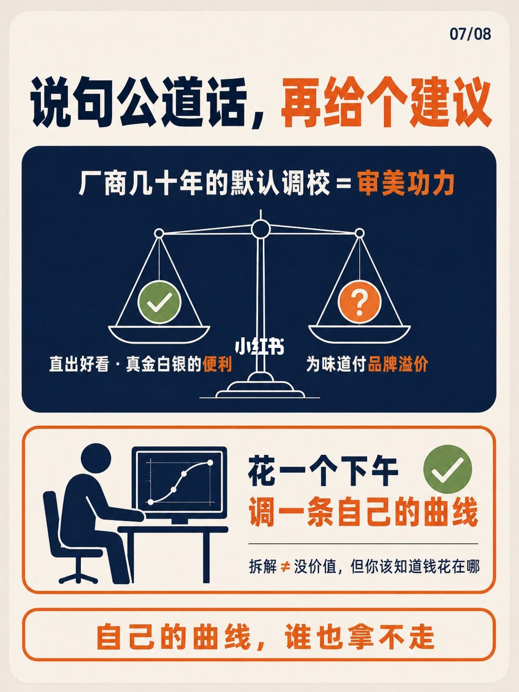
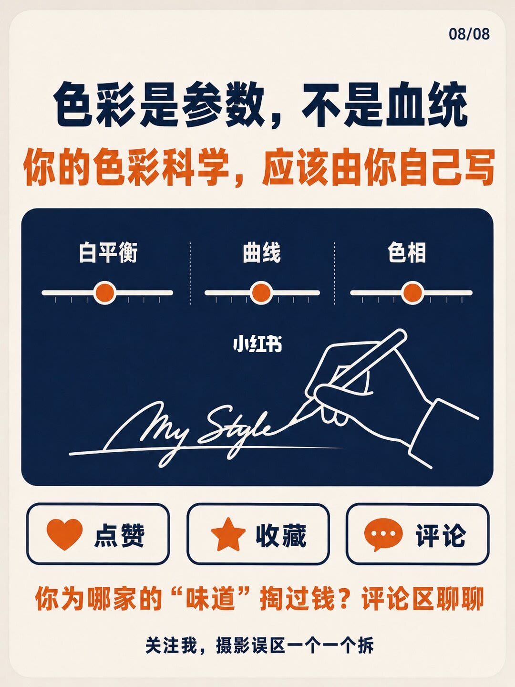

图文实录 · 小红书 · 影像派
“德味”“佳能色”是玄学？其实是三个参数
标题问德味和佳能色是不是玄学，封面自己答：其实是三个参数，并把味道写成可以拆解、也可以搬运。封面滑杆印的是色温、对比度、色调。第 3 到第 5 页换成白平衡的冷暖、一条决定油润的曲线，以及肤色往红或往黄。图上没有开尔文、饱和百分比或曲线坐标。
1/8
封面：味道可以拆，也可以搬

深蓝字：「“德味”“佳能色”是玄学？」。橙色大字：「其实是三个参数」。框里是线稿的手掀开一层纱，纱下是调色盘，盘上一个问号。右侧三个滑杆，字分别是「色温」「对比度」「色调」。橙色圆钮停在轨道上，旁边没有数字。页底橙色条：「味道可以被拆解，也可以被搬运」。
2/8
三个被供起来的名字，底下是旋钮和曲线
页眉：「先说一个让老玩家不爽的观点」。三块吊牌从左到右是「“德味”」「“某家人像色”」「“胶片模拟”」。一只手用工具掀开左边那块，底下露出齿轮、三条滑杆和一块曲线。中间和右边的牌没有被掀开。框下白字两行：「被说得神乎其神的“色彩科学”」「大部分可以拆解，甚至复刻」。页底橙色框：「别急着骂，看完这组图再说」。这里写的是「某家」，没有再写佳能。
3/8
参数一：白平衡把直出分成暖金和冷中性

标题：「参数一：白平衡的“小偏心”」。左图说明两行：「直出偏暖」「自带金色滤镜」。右图：「偏冷偏中性」。橙色条：「你以为的温润，是白平衡在偏移」。下面一行：「各家直出的第一层“味道”」。页底框：「温润不是玄学，是色温在说话」。两张图都没有色温数字，也没有相机型号。
4/8
参数二：形容词挂在同一条曲线上

标题：「参数二：一条曲线定“油润”」。坐标轴是「输出」和「输入」。高光一端分出两支：「高光滚落硬」和「滚落软」。暗部两支：「压得深沉」「提得通透」。曲线中段三个标签：「厚重」「通透」「油润」。页下：「这些形容词的大半，都写在这条线上」。橙色框：「影调即性格，曲线即味道」。没有锚点坐标，也没有反差数值。
5/8
参数三：肤色往红显气色，往黄显质感

标题两行：「参数三：」「肤色往哪偏，人像谁家强」。左边两个旋钮：「蓝色独立调校」「绿色独立调校」，虚线分别指向色轮上的蓝和绿。右侧框标题「肤色区放大」，从一个底色分出两支：「偏红 · 显气色」「偏黄 · 显质感」。中间一句：「“人像谁家强”的答案，基本写在这里」。页底：「色彩是参数表，不是血统书」。没有色相角度，也没有写哪一家偏红、哪一家偏黄。
6/8
色卡、仿制配置文件，再到喂图学风格
橙色标题两行：「AI时代，」「味道的护城河正在变浅」。三步编号 1、2、3。第 1 步是色卡图标，字是「色卡校准」。第 2 步是带滑杆的文件图标，两行：「仿制配置文件」「大幅接近另一家直出」。第 3 步橙色框：几张小图指向写着 AI 的方块，再指向滑杆，字是「喂几张图」「自动学走风格」。框外：「一台相机模仿另一家，早不是新鲜事」。页底：「能被参数化的，就能被复刻」。没有软件名，也没有写要喂几张。
7/8
直出的便利，和为味道付的溢价，放在同一架天平上

页眉：「说句公道话，再给个建议」，后半句是橙色。深蓝框顶行：「厂商几十年的默认调校 = 审美功力」，「审美功力」用橙色。天平左盘是勾：「直出好看 · 真金白银的便利」，「便利」是橙色。右盘是问号：「为味道付品牌溢价」，「品牌溢价」是橙色。没有金额。
下面一框，人坐在屏幕前，屏幕上是一条带点的曲线。字是「花一个下午」「调一条自己的曲线」，旁边一个勾。横线下面：「拆解 ≠ 没价值，但你该知道钱花在哪」，不等于号是橙色。最底一行：「自己的曲线，谁也拿不走」。没有写出那条曲线的形状。
8/8
收束成白平衡、曲线、色相，署名留给自己

深蓝标题：「色彩是参数，不是血统」。橙色副题：「你的色彩科学，应该由你自己写」。框内三个滑杆从左到右印的是「白平衡」「曲线」「色相」，圆钮没有数字。下面是手握笔写签名的线稿，字母是手写体，无法逐字母确认。三个空框分别是心形「点赞」、星形「收藏」、对话框「评论」。橙色提问：「你为哪家的“味道”掏过钱？评论区聊聊」。页底：「关注我，摄影误区一个一个拆」。
收尾
能写进参数表的，就不是血统
结论
笔记把德味、某家人像色、胶片模拟从「色彩科学」的说法里拆开：第一层是白平衡造成的暖金或冷中性；第二层是同一条曲线上的高光滚落、暗部深浅，以及厚重、通透、油润；第三层是肤色偏红显气色、偏黄显质感，蓝和绿各自还有独立调校。复刻路径印成色卡校准、仿制配置文件、喂几张图给 AI。作者同时承认厂商几十年的默认调校等于审美功力，直出好看是付过钱的便利，并建议花一个下午调一条自己的曲线。
支撑页
封面三个滑杆在 1/8。三个名字和「大部分可以拆解，甚至复刻」在 2/8。白平衡冷暖在 3/8，曲线上的形容词在 4/8，肤色两支和蓝绿调校在 5/8。三步复刻在 6/8。天平和「花一个下午」在 7/8。白平衡、曲线、色相三词并排，以及「不是血统」，在 8/8。
边界
全程没有开尔文、光圈、饱和度百分比或曲线坐标。封面滑杆叫色温、对比度、色调；第 8 页改称白平衡、曲线、色相。图没有说这两组词一一相等，对比度也没有被写成第 4 页那条曲线的数值。第 2 页写「某家人像色」，内页没有再点名佳能，也没有写哪一家偏红或偏黄。「喂几张图」没有张数。品牌溢价没有价格。「护城河正在变浅」没有对照数据。第 8 页签名是手写线稿，逐字母无法确认。第 7 页不等于号后半句按图面读作「但你该知道钱花在哪」。